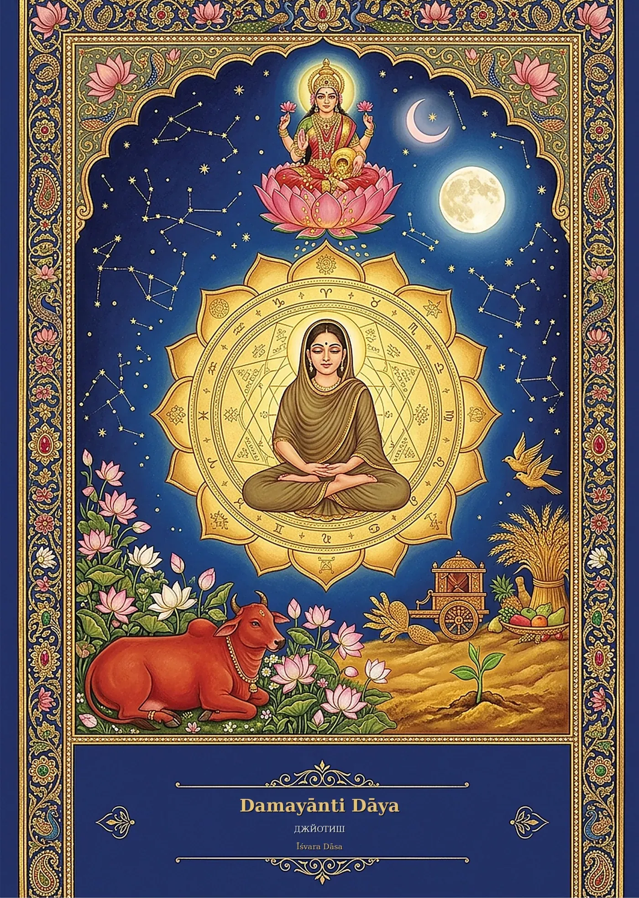

Персональная книга по ведической астрологии
На обложке — ваше имя.
Внутри — ваша жизнь.
Пишется месяцами. Для одного человека. В одном экземпляре.

«Такое чувство, что кто-то впервые за всю мою жизнь увидел меня настоящую. Под конец мы плакали всей семьёй»
Час консультации. Через месяц от него остаётся пара фраз.
Слова забываются.
Книга остаётся.
Консультация отвечает на один-два вопроса. Книга — на все ваши, и в день трудного решения вы открываете нужную главу, а не ищете нового астролога.
Годами вините себя за свой характер?
То, у чего есть имя и расчёт, перестаёт быть виной.
Вспышки, спады, одни и те же ошибки — чаще всего вы просто не знали, как устроены. Когда это видно, вина уходит, а на её место приходит понимание, что делать дальше.
«У меня ушло чувство вины, что я какая-то неправильная. Теперь понимаю, почему всё так складывалось и как мне дальше поступать»
Что внутри
Двенадцать сфер.
Одна жизнь.
-
«Всё есть. Но ничего не хочется»
Предназначение
Куда вкладывать силы, чтобы жизнь отвечала отдачей, а не сопротивлением.
-
«Со мной что-то не так»
Характер
Как вы устроены, откуда берутся силы и куда уходят. Таланты, которые вы считали недостатками.
-
«Деньги приходят — и уходят»
Дело и деньги
Через что деньги приходят легко, какие проекты забирают больше, чем дают, и годы, когда стоит расширяться.
-
«Снова тот же спор»
Любовь и брак
Какие союзы вам подходят и как выйти из повторяющихся сценариев.
-
«Что меня ждёт дальше?»
Годы впереди
Большие периоды жизни и прогноз по годам: окна для рывка и время, когда лучше не рисковать.
-
«Откуда эти страхи?»
Прошлое души
Необъяснимые страхи и таланты «из ниоткуда» — и что с ними делать сейчас.
А ещё: дети, род, тело, место, практики под вашу карту и трудная сторона — бережно, в отдельном приложении, без запугивания.
Нет шаблона: порядок и глубину глав определяют ваша карта и ваши вопросы. Нет детей — не будет глав о детях. Главный вопрос — переезд? Под него появится отдельная часть.
В семье всё повторяется. Страшно ошибиться с ребёнком.
Одна книга.
Вся семья.
Муж или жена, дети, родители — в том же томе. Без отдельных исследований на каждого.
Пара
Задачи союза и откуда берутся повторяющиеся ссоры.
Дети
Отдельная глава о каждом — по его собственной карте. Где его сила, а где ваши ожидания.
Род
Что тянется по линии отца и матери — и как не передать это дальше.
6 из 18 частей книги «Аэлита» — о семье: о муже, о каждом из двух сыновей, об отце и сыновьях, о роде.
Её прочтут
ваши внуки.

- 400–550страниц
- 80 000+слов — объём романа, где главный герой вы
- Шитыйблок, твёрдый переплёт, бумага Munken Pure
- 1экземпляр. Второго не существует
PDF книги нет ни у кого: ни в облаке, ни в почте, ни у меня. Расчёты и текст — на моём компьютере, офлайн. Ваша история остаётся только у вас на полке.
Технические характеристики
- Формат
- А5, 148 × 210 мм
- Объём
- 400–550 страниц, 80 000+ слов
- Переплёт
- твёрдый, блок прошит нитками
- Бумага
- Munken Pure, 100 г/м²
- Обложка
- авторская иллюстрация и ваше имя
- Вклейка
- цветные карты: Раши, Навамша, Чалит-бхава, синастрия семьи
- Язык
- русский или английский
- Доставка
- курьером в руки, в любую страну
Примерьте.
Впишите имя — так оно встанет на обложку. Иллюстрация у каждой книги своя.
Фрагмент книги «Дамаянти Дайя»: титул, первая часть «Кто ты». В книге я говорю с читателем на «ты» — как с близким человеком.
Астрологи уже были — и ничего не осталось?
Точность, которую
можно проверить.
событий вашей жизни
Прежде чем писать о будущем, я сверяю карту с вашим прошлым: переезды, браки, дети, взлёты и потери. Если карта не объясняет прошлое, ей нельзя доверять будущее.
школ должны согласиться
Парашара, Джаймини, КП, Нади, Лал Китаб. В книгу идёт только то, что независимо подтверждают минимум две. Остальное отсекается.
программа расчётов
Я написал её сам: астрономические эфемериды, 49 систем планетных периодов. И сверку текста: ни одна книга не повторяет другую.
Карта задаёт погоду за окном.
Как одеться и куда идти — выбираете вы.
И ещё кое-что
900 ответов.
Всегда под рукой.
900вопросов, которые стоило бы задать астрологу — с ответами по вашей карте
Девятьсот вопросов
Поиск по тому300 часовконсультаций — столько заняли бы эти ответы. У вас они в телефоне
Истории
Что остаётся
после книги.
«Я обычно всегда стесняюсь и не делаю этого… А вчера даже от себя не ожидала: ни один мускул не дрогнул»
«Я скептически отношусь к такому… Но были моменты, которые прям в точку»
«Теперь понятно, в какую сторону двигаться и как действовать»
«Кажется, как будто я проснулась от многолетнего сна»
в работеброньсвободно
Пять книг одновременно.
Сейчас свободно два места.
Каждая книга — от одного до трёх месяцев работы одного человека: расчёты, сверка, текст объёмом с роман, вёрстка. Без помощников. Поэтому их мало — и поэтому они не стоят как консультация.
Если начать сейчас, книга будет у вас через 1–3 месяца.
- Сегодня
Заявка
Пишете сюда или в Telegram. Отвечаю сам, в течение суток.
- 20 минут
Знакомство
Бесплатно, в Zoom. Проверяю, можно ли уточнить время рождения, и называю стоимость.
- 1–3 месяца
Книга
Опросник и интервью, расчёты, текст, печать. Курьер привозит книгу в руки.
- После
Итоговая встреча
До двух часов в Zoom: главные выводы, ваши вопросы, первые шаги.
Начнём
с разговора.
20 минут в Zoom: ваш запрос, данные рождения и честный ответ, возьмусь ли я за вашу книгу. Бесплатно и ни к чему не обязывает.
Удобнее в Telegram? Написать @Ishvaradasa
Вопросы.
Я не знаю точного времени рождения
Если разброс 10–15 минут, уточним его по событиям вашей жизни. Если время неизвестно совсем и событий нет, я честно откажу — до оплаты.
Я скептически отношусь к астрологии
Верить на слово не нужно: карту сначала проверяют на вашем прошлом, по 10–20 реальным событиям.
Можно подарить книгу?
Да, если вы знаете точные данные рождения человека и главные события его жизни. К юбилею или свадьбе книгу закладывают хотя бы за три месяца.
Будут ли в книге тяжёлые события?
Сложные периоды вынесены в отдельное бережное приложение — вместе с тем, как их пройти. Предсказаний смерти нет.
Можно получить PDF книги?
Нет. Книга существует в одном печатном экземпляре. В электронном виде вы получаете том «900 вопросов».
Кто пишет книгу?
Я сам, от расчёта до вёрстки. Работу помощникам не передаю.
Как оплатить?
Полная предоплата: под вашу книгу я закрываю место на несколько месяцев. Способ оплаты из любой страны подберём на встрече.
Кому книга не подойдёт?
Если нужен быстрый ответ на один вопрос к завтрашнему дню — для этого есть консультация. И если хочется услышать, что всё предрешено: я исхожу из того, что выбор за вами.
Это конфиденциально?
Да. Ваши данные и история не публикуются и не передаются третьим лицам.